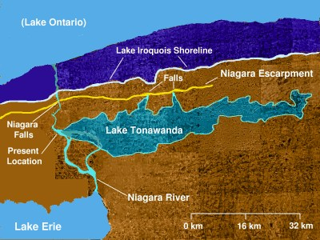
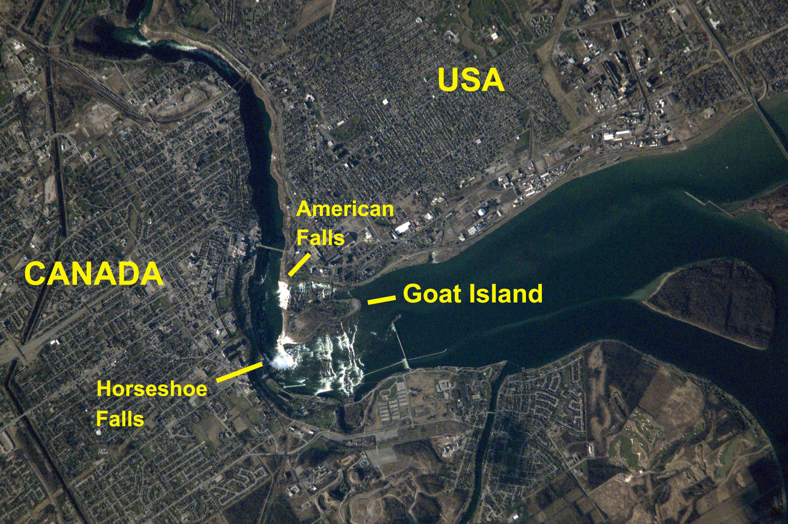

Общие сведения
Комплекс Ниагарских водопадов находится на реке Ниагаре в Северной Америке. Он включает в себя три основных потока: серпообразную «Подкову» (англ. Horseshoe Falls, ширина: ок. 670 м, высота: 57 м.), так называемый «Американский водопад» (англ. American Falls, ширина: ок. 260 м, высота: 57 м.), а также небольшой водопад «Фата» (англ. Bridal Veil Falls, высота: 55 м.)[1][2]. Высота свободного падения воды в «Американском водопаде» несколько меньше — около 21 м, поскольку дно ущелья завалено нагромождением камней, образовавшихся в результате массивных оползней в середине XX века[7][8]. Глубина бассейна у подножия «Подковы»: 51 м, что примерно соответствует высоте обрыва над ним[3].
По оценкам специалистов, средний совокупный объём воды, проходящий через водопады, должен составлять 5720 м³/с без учёта гидротехнических сооружений. Однако последние кардинально меняют картину: начиная со второй половины XX века от 50 % до 75 % всего потока проходит не через русло реки, а через созданные человеком туннели, в которых приводит в движение турбины[9][10][11]. Летом, когда электростанции наиболее производительны, расход воды непосредственно через обрыв падает до 2830 м³/с[11]. На полноводность Ниагары оказывают влияние и природные факторы, такие как колебание температуры и влажности в системе Великих озёр[9]. Расчёты, выполненные в XIX веке, показывают, что некогда водопады были ещё более мощными: например, летом 1841 года авторы первой работы по геологическому изучению Ниагары измерили скорость течения реки чуть выше линии обрыва, и с помощью уравнения Эйлера вычислили объём воды: около 10600 м³/с[комм 2][12][9]. Инженер-топограф Джон Богарт (John Bogart), представлявший штат Нью-Йорк, в 1890 году, представил собственные расчёты: около 7780 м³/с[13][9].
Приблизительно 90 % воды попадает в ущелье нижнего течения Ниагары черед «Подкову»[14][15]. Справа от «Подковы», которую так же называют «Канадским водопадом» (англ. Canadian Falls), находится Козий остров[комм 3] — самый крупный из группы примыкающих непосредственно к водопаду островов. Этот участок суши, как и следующий за ним остров Луна (англ. Luna Island), разделяют реку ещё на два рукава, каждый из которых обрушивается в каньон под собственным названием: «Фатой» между островами, и «Американским водопадом» между Луной и правым берегом реки[16].
Природа водопада
Образование
Формирование суши на территории современных Великих озёр началось более 300 млн лет назад, в конце палеозойской эры. На поверхности оказались несколько слоёв кристаллических осадочных пород, сформированных в разные геологические эпохи из остатков организмов тёплого моря: доломиты, глинистые сланцы, известняки, песчаники. Далее, под воздействием глубинных процессов поверхность Земли начала искривляться, на месте трёх из пяти озёр образовалась котловина, получившая название Мичиганской[en]. Обнажённые горные породы по краям котловины образовали выпуклость, которая в дальнейшем в результате эрозии стала разрушаться. Этот процесс шёл неравномерно: одни отложения вымывались быстрее, чем другие, и в результате образовалась так называемая куэста: череда крутых скалистых обрывов в местах соединения горных пластов. Ниагарский уступ, как теперь называют эту куэсту, протянулся на сотни километров по периметру Мичиганской котловины и, в частности, стал одной из причин возникновения Ниагарского водопада[17][18][19].
Со временем климат изменился, и за последние 2 млн лет территория Канады и северной части США многократно покрывалась ледниками. Ледяной панцирь двигался подобно бульдозеру, перемалывая и передвигая камни и почву. Кое-где он углубил и расширил русла рек, создав озёра, а в других местах засыпал их, заставив эти реки прокладывать новые русла. В ходе последнего оледенения 75—11 тыс. лет назад, известного как Висконсинское, появились современные Великие озёра. На раннем этапе все озёра были объединены в один гигантский водоём, который со временем стал уменьшаться и распадаться на более мелкие. Предшественником современного Онтарио было более крупное Ирокезское озеро; к югу от него и к северо-востоку от озера Эри образовалось ещё одно, ныне исчезнувшее озеро Тонаванда[en][20][21].
По мере потепления и отступления ледника талая вода из одних водоёмов перетекала в другие, расположенные ниже. Между озёрами Эри и Тонаванда образовался узкий пролив, предшественник современной реки Ниагары. В свою очередь, вода из Тонаванда попадала в Ирокезское озеро, в нескольких местах плавно перетекая из одного водоёма в другой, минуя порог куэсты. Одним из таких водосливов стал Ниагарский водопад, появившийся около 12,3 тыс. лет назад[22]. По мере уменьшения уровня воды перепад высот между водоёмами увеличивался, пока Ирокезское озеро не достигло подножия уступа. Озеро Тонаванда почти полностью исчезло, сохранившись лишь в виде нынешнего нижнего течения Ниагары[20].
Смещение
Как описано выше, скальный грунт вдоль русла Ниагары состоит из нескольких пластов метаморфических горных пород, сложившихся из спрессованных остатков морских организмов. Непосредственно под тонким, не более полутора метров толщиной, слоем ледникового щебня лежат твёрдые, чрезвычайно устойчивые к эрозии доломиты среднесилурийского возраста (относящиеся к венлокской эпохе[en])[23][24]. Этот слой занимает большую, около 40 м, часть высоты водопада[23][24]. Непосредственно под ним находится пласт глинистых сланцев средней толщиной около 18 м, образовавшийся несколько ранее, когда состав морской воды был иным[25]. Сланцы так же, как и доломиты, плохо поддаются воздействию текущей воды. Однако при частых колебаниях температуры воздуха вокруг точки замерзания в них образуются микротрещины, в которые попадает вода и разрушает породу. Нижний слой медленно вымывается, а верхний в виде каменных глыб обрушивается на дно ущелья[26][27].
Изначально водопад находился примерно в 11 км ниже по течению Ниагары, между американским городом Льюистон[en] и канадским городом Куинстон. Под воздействием эрозии он значительно сместился в южном направлении, оставив на своём пути глубокие каньоны[28]. Расход воды в Ниагаре неоднократно менялся вследствие изменения гидрологического режима в бассейне Великих озёр. Были периоды, когда образовавшиеся ледниковые дамбы перенаправили воды Гурона напрямую через долины рек Святого Лаврентия или Гудзона, огибая озеро Эри и вытекающую из него Ниагару с севера[29]. В такие периоды объём переносимой воды сокращался, и образованные водопадом каньоны становились более узкими. В какой-то момент Ниагара резко изменила направление движения, совершив поворот под прямым углом в ложбине, известной как «Ниагарский водоворот» (англ. Niagara Whirlpool). Учёные полагают, что в этом месте отступающий водопад наткнулся на русло доисторической реки, существовавшей до наступления Висконсинского оледенения — так называемой «реки Святого Давида» (англ. St. David’s River). Ледник засыпал русло водотока обломками горных пород, которые относительно легко размылись под тяжестью падающей воды и изменили направление русла реки Ниагары[30][31]. Участок каньона, в котором современное русло Ниагары совпадает с руслом древней реки, ныне называется ущельем Святого Давида (англ. St. David’s Gorge)[32].
Около 600 лет назад Ниагарский водопад достиг группы островов, самым крупным из которых оказался Козий[33]. Преграда разделила его на несколько потоков, получивших название «Канадского», «Американского» водопадов, и водопада «Фата». С начала XX века скорость разрушения сланцевых пород в районе водопада значительно снизилась вследствие прямого вмешательства человека: если за период с 1842 по 1905 годы водопад перемещался на 80—100 см в год[33], то в 1962—2017 годах в среднем на 40 см за тот же промежуток времени[34]. По данным Международной совместной комиссии[en], за последние десятилетия средняя эрозия не превышает 10 см в год[35][36]. Основными причинами замедления эрозии стали существенное уменьшение объёма низвергающейся воды (часть её минует водопад по трубопроводам), более равномерное распределение оставшихся потоков по всей ширине реки и укрепление береговой линии[35].
Колебания уровня воды в системе Великих озёр, которые сами по себе могут иметь как естественные, так и антропогенные причины, также влияют на скорость движения водопада[9]. Выше по течению Ниагары имеются пороги, и в случае если водопад отступит до их высшей точки, то его высота увеличится ещё на 15 м, что в свою очередь усилит давление на дно и ускорит эрозию[37].